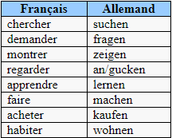

Tous les verbes allemands forment leur infinitif en « en » ou « n ».
Voici le schéma de conjugaison pour les verbes réguliers en « en ».
Ce temps est l'équivalent de notre imparfait et passé simple.
Il peut aussi correspondre au passé composé français.
On enlève la terminaison «en» et ajoute la bonne terminaison.
Quelques verbes à apprendre
